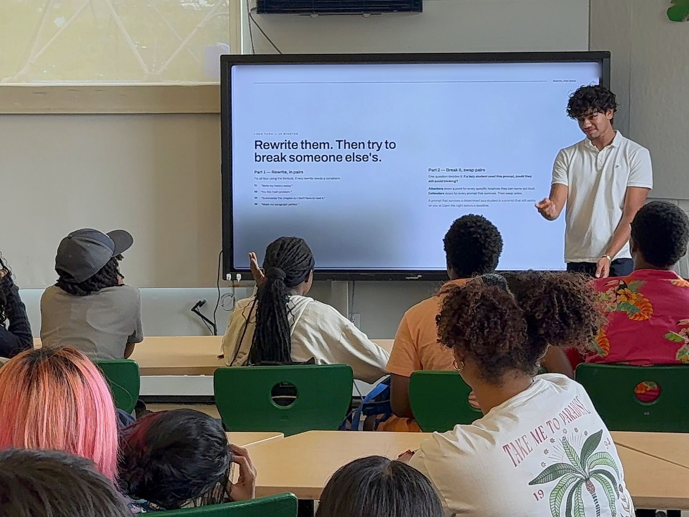
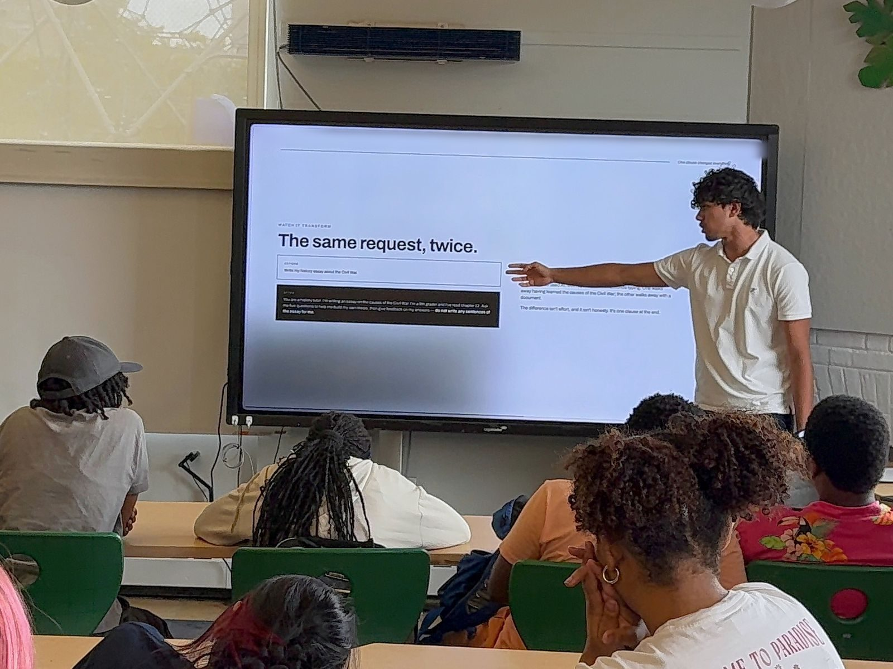
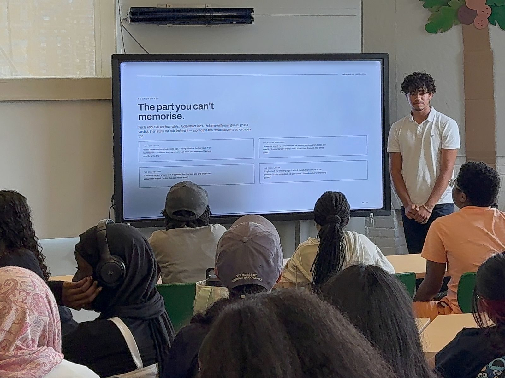

Founding pilot school
Help us plan a small classroom pilot for grades 5–12 when lessons are ready.
OUR REACH
An idea worth building carefully. Free lessons that help young people test, question and make sense of AI.
In development · Not yet open to students
These are our plans, not student results. Courses are not yet open.
THE FOUNDER’S PILOT CLASS
In summer 2026, founder Aditya Jhalani designed and taught an eight-lesson AI-literacy course to 40 incoming ninth graders at Breakthrough New York. This class is where Machine Literate came from.
Using laptops and a projector, the class met for 30-minute sessions twice a week from July to August, with the final class on August 5. Aditya revised the lessons using Breakthrough staff feedback.
Lessons covered what AI is and isn’t; how data, training and bias shape it; prompting that keeps you thinking; AI as a tutor rather than a shortcut; hallucinations, fact-checking and bias audits; and writing, voice, privacy and academic integrity. The final project was a responsible AI playbook.
This was the founder’s pilot class, not the two 12-lesson courses now being developed for Machine Literate.



PARTNERS
We don’t have partners yet. We’re looking for people and places to help shape our first pilots.
Help us plan a small classroom pilot for grades 5–12 when lessons are ready.
Discuss lesson timing, access needs and support before any pilot begins.
Review examples and tell us what would make the lessons useful in your teaching.
Help us think through clear instructions, age-appropriate ideas and practical classroom use.
Connect with us about AI literacy in libraries, community spaces and youth programs.
Share perspectives on access, local needs and responsible ways to reach future learners.
As we prepare our first pilots, we’d love to partner with you.
Become a pilot partnerMILESTONES
A record of the work so far, and what still needs to happen.
SUMMER 2026
Aditya taught 40 incoming ninth graders at Breakthrough New York across eight AI-literacy lessons. The final class was August 5, 2026.
INCORPORATED · OCT 2026
Machine Literate, Inc. incorporated in New York on October 9, 2026.
PLANS AUTHORED
Two 12-lesson course plans authored. These are plans, not completed courses.
IN DEVELOPMENT
An interactive lesson prototype is in development.
PLANNED BEFORE LAUNCH
Review access needs and test with people before lessons open.
HOW WE TEACH
Our design goals for an experience that is practical, approachable and fair.
We’re designing interactions where learners change examples, test ideas and see what happens.
No coding required. The goal is to understand the ideas behind AI, with plain language and everyday examples.
We aim to build for keyboard and screen-reader use, with clear instructions and time to think. Accessibility review is planned.
TWO COURSES, TWO ENTRY POINTS
Neither course requires coding or completion of the other.
12 PLANNED LESSONS
5–8Grades 5–8
Explore how AI learns from examples, spot unreliable answers and practice making careful choices with evidence.
12 PLANNED LESSONS
9–12Grades 9–12
Test AI systems, compare the errors that matter and build a reasoned case for when to use a tool or leave it out.
Get a feel for a small learning interaction.
Try the demoHOW WE’LL MEASURE LEARNING
We plan to evaluate learning with explanations and practical tasks, not just clicks or completion counts.